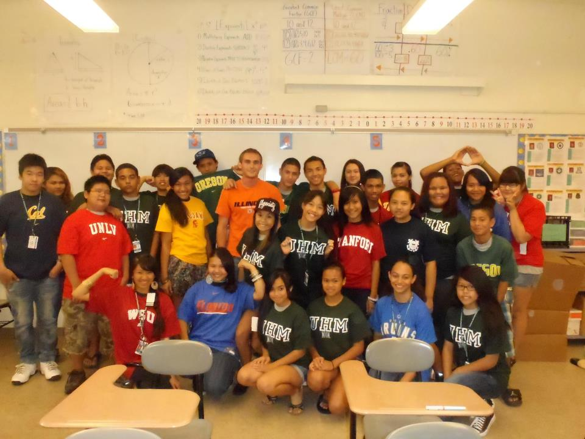

When Liliuokalani, the last queen of Hawai`i, consolidated her lands into a trust, she intended that the funds advance the progress of Native Hawaiians amidst their marginalization by foreigners. As she envisioned the heirs of her legacy enacting such progress, I can hardly imagine that she thought of me - a gangly, idealistic engineer from Illinois - as a steward of her vision. Teach For America, however, brought me to the indigenous town of Waianae, Hawaii, to devote myself to the challenge of educating underserved Hawaiians against a tide of historic underperformance.

In the two years that I worked in Waianae, I witnessed how systems of disadvantage limit the educational success of children. Seeing such systems impact my own students, whom I had grown to care deeply for, invigorated within me a passion to combat educational inequality. When I achieved results with my students, it equipped me with an unwavering sense of possibility, a quality that has shaped my life and that continues to drive my work. What matters most to me is leveraging this sense of possibility to ensure that circumstances that children are born into do not dictate their educational success.
In childhood, I developed a nascent sense of possibility through witnessing the work of my mother. She is a physical therapist who devotes her life to helping children with disabilities. Families come to her believing their child may be wheelchair-bound, but unbeknownst to them, my mom has a propensity to bend reality to align with her unyielding conviction: her kids walk. It doesn't stop there, either. Her kids play hockey, drive cars, and run for political office.
In Waianae, too, a child's fate may seem predetermined. Contrary to Liliuokalani's vision, over 30% of Waianae students drop out, and less than 10% earn a bachelor's degree in 4 years.
My time in Waianae began with a bang - literally when my car exploded on my first commute and figuratively when my student 'Kahikukuokalani' linguistically derailed my Day 1 roll call. The Hawaiian Creole dialect was undecipherable, and my presence as a 'haole' evoked sentiments of distrust.
Compounding the effects of culture shock, my socioeconomic background had not exposed me to systems of disadvantage that work against select groups of people. As a Caucasian in Waianae, I experienced such a system through the subtle but damaging effects of latent racism. I was constantly aware of my skin color and often doubted my acceptance. An example was how I felt preordained to the 'white man in Waianae' stereotype - someone with selfish motivations who doesn't really understand the struggles of the community. This made me feel that no matter how genuinely I cared for my students that my efforts would always be tainted by my skin color.
Growing up in the middle class also shielded me from another system at work in Wai'anae: poverty. I am not referring to poverty's salient effects -kids not owning shoes - but instead to its suppressive social expectations. These expectations manifested themselves anywhere from the 'OMG!' reactions of telling non-Waianae colleagues where I worked, to rental car insurance covering anywhere on Oahu except Waianae. The expectation was always: Waianae is not good. I wondered how my students, contrary to this branding, could internalize the belief that they can be great.
While I tolerated the personal racism, I could not help but rebel against the oppression my students encountered. I worked tirelessly with my students to have 100% of them pass the state assessment compared to the school's 30%. I could not stop there, either. I formed a nonprofit to prepare Waianae students for college that has since grown to support 75 students through the help of 22 mentors and over $125,000 in scholarships. Whenever I see these efforts translate into student progress, I feel a passionate force channeled through me, reaffirming my conviction that this work matters.
The experiences of my time in Hawaii continue to push the boundaries of my thinking to encompass a sense of possibility that educational inequality can be beaten. Whereas my past efforts have supported classrooms and communities, I see before me the greatest opportunity of all - to develop a means to support the millions of students across the country who, like Waianae students, helplessly fall victim to the grip of poverty. What matters most to me is fostering a further-reaching sense of possibility that can commensurately address this nationwide plague of disparity, and that lives up to my mother's legacy of overcoming circumstance to realize each child's full potential.